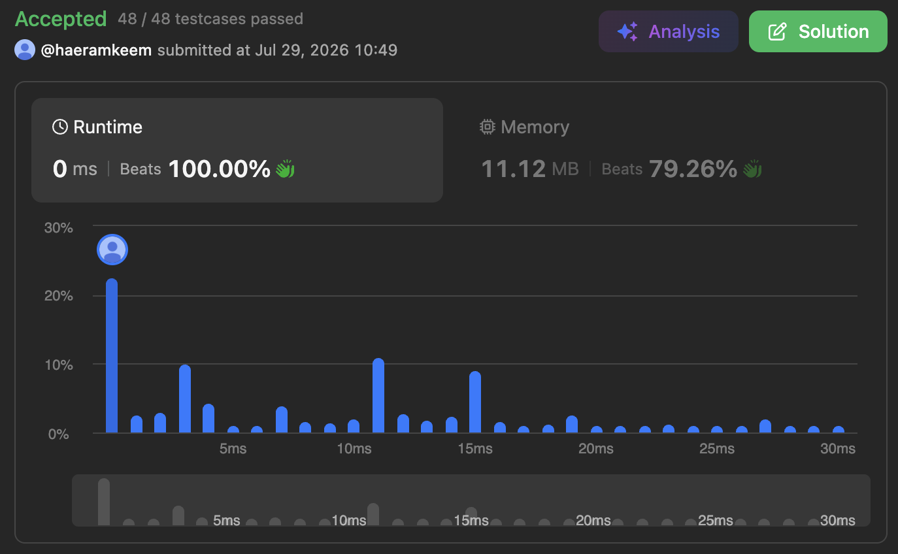
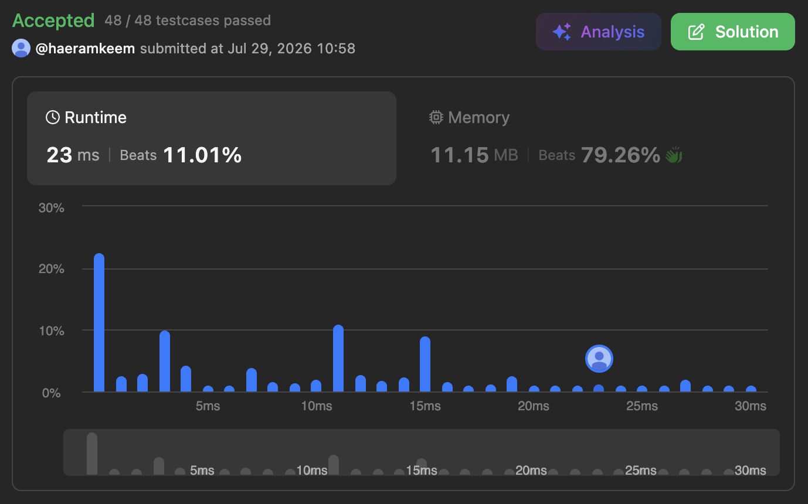
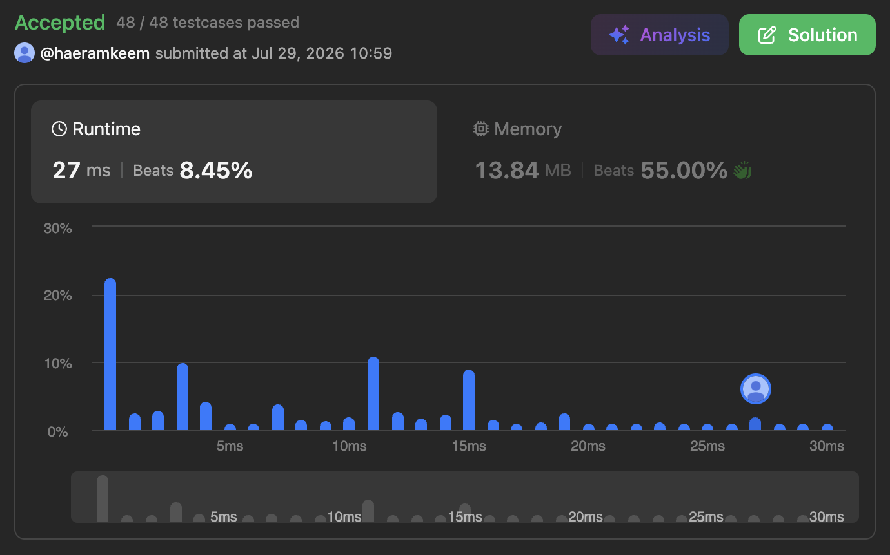
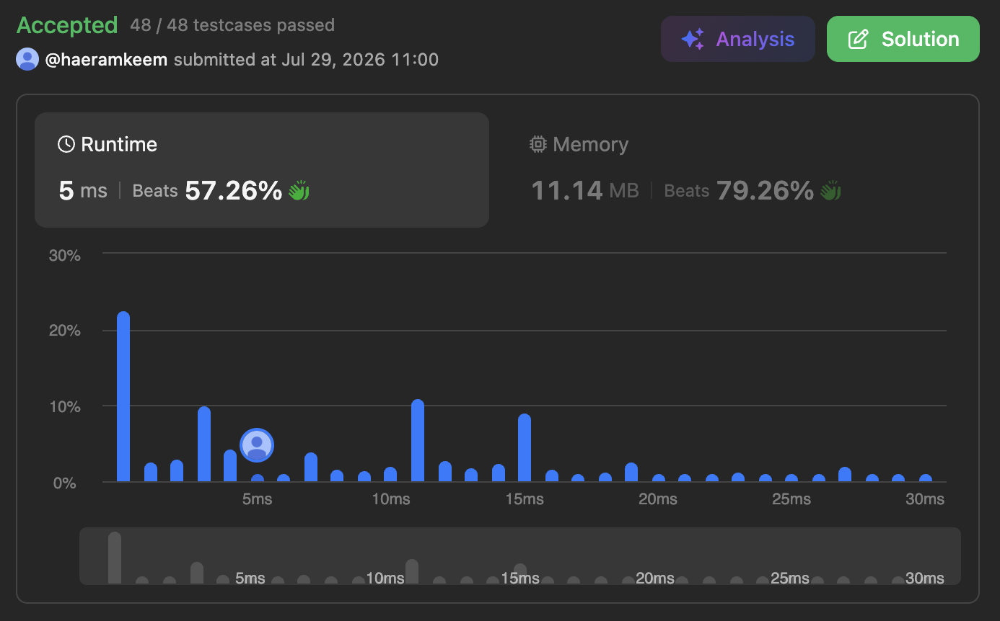

문제 링크
요약
- 필요한것만 찾도록 점화식 단순화시키기
최종
결과

dp[i][j]는s[i:j-1]가 breakable 한지를 나타낸다. 그럼dp[0][n]가 정답일거다.- 구하는 방법은
- 일단 모든
wordDict안에 있는word들에 대해str::find()를 이용해dp[i][j]를 구해놓는다. - 그리고 1부터 시작해서 1씩 증가하는
i에 대해dp[0][i]는i보다 작은 어떤j에 대해dp[0][j] && dp[j][i]이면 참이다.- 이렇게 생각해보자. 지금 우리는
dp[0][i]를 확정지으려 한다. 그렇다는 것은,i보다 작은j에 대해dp[0][j]는 확정되어있다는 것이다.- 여기서 ‘확정짓다’ 라는 것은 ‘모든 경우의 수를 고려했을 때 breakable 한지 알아낸다’ 라고 생각하자.
- 즉,
dp[0][i]가 확정되었다면, 이 값에 대한 반례가 없다는거다.
- 그럼 이미 확정되어있는
dp[0][j]에 대해dp[i][j]를 추가적으로 고려해dp[0][i]의 경우의 수 하나를 알아내자는 거다. - 그래서
i보다 작은 모든j에 대해 이짓을 하면dp[0][i]에 대해서도 모든 경우의 수가 고려되었으므로 확정되는 것이다.
- 이렇게 생각해보자. 지금 우리는
- 일단 모든
- 그래서 코드는 간단하다:
class Solution {
public:
bool wordBreak(string s, vector<string>& wordDict) {
int n = s.size();
vector<vector<bool>> dp(n + 1, vector<bool>(n + 1, false));
for (auto &w : wordDict) {
int idx = s.find(w, 0);
while (idx != -1) {
int end = idx + w.size();
dp[idx][end] = true;
idx = s.find(w, idx + 1);
}
}
for (int i = 1; i <= n; i++) {
for (int j = 0; !dp[0][i] && j < i; j++) {
dp[0][i] = dp[0][j] && dp[j][i];
}
}
return dp[0][n];
}
};다른 풀이
Recursion (실패)
코드
class Solution { int find(string& a, string &b, int begin, int end) { int idx = b.find(a, begin); if (begin <= idx && idx + a.size() <= end + 1) { return idx; } return -1; } bool breakable(string &s, vector<string>& dict, int begin, int end) { if (begin > end) { return true; } for (auto &w : dict) { int idx = find(w, s, begin, end); if (idx == -1) { continue; } bool l = breakable(s, dict, begin, idx - 1); bool r = breakable(s, dict, idx + w.size(), end); if (l && r) { return true; } } return false; } public: bool wordBreak(string s, vector<string>& wordDict) { return breakable(s, wordDict, 0, s.size() - 1); } };
- 딱봐도 DP 여서 recursion 으로 빠르게 접근해봤다. 하지만 결과는 timeout.
Floyd-Warshall
결과

코드
class Solution { public: bool wordBreak(string s, vector<string>& wordDict) { int n = s.size(); vector<vector<bool>> dp(n + 1, vector<bool>(n + 1, false)); for (auto &w : wordDict) { int idx = s.find(w, 0); while (idx != -1) { int end = idx + w.size(); dp[idx][end] = true; idx = s.find(w, idx + 1); } } for (int i = 0; i < n; i++) { for (int b = 0; b <= i; b++) { for (int e = i; e <= n; e++) { dp[b][e] = dp[b][e] || (dp[b][i] && dp[i][e]); } } } return dp[0][n]; } };
dp[i][j]가 참이라는 것을, graph nodei에서j로 가는 edge 가 있다고 바꿔서 생각한다면 이 문제는 node0에서n으로 가는 방법이 있냐를 물어보는 것이다.- 그래서 Floyd-Warshall 로 경로가 있냐를 탐색해봤다.
- 근데 Floyd-Warshall 은 모든 node 에서 모든 node 로 가는 방법을 알아내기 때문에 확실히 느리다.
Trie
결과

코드
class TrieNode { bool is_end; array<TrieNode *, 26> children; public: ~TrieNode() { for (int i = 0; i < 26; i++) { delete children[i]; } } void insert(string &s, int b, int e) { TrieNode *it = this; for (; b < e; b++) { if (!it->children[s[b] - 'a']) { it->children[s[b] - 'a'] = new TrieNode(); } it = it->children[s[b] - 'a']; } it->is_end = true; } bool find(string &s, int b, int e) { TrieNode *it = this; for (; b < e; b++) { if (!it->children[s[b] - 'a']) { return false; } it = it->children[s[b] - 'a']; } return it->is_end; } }; class Solution { public: bool wordBreak(string s, vector<string>& wordDict) { int n = s.size(); vector<vector<bool>> dp(n + 1, vector<bool>(n + 1, false)); TrieNode trie; for (auto &w : wordDict) { trie.insert(w, 0, w.size()); } for (int b = 0; b <= n; b++) { for (int e = b + 1; e <= n; e++) { if (trie.find(s, b, e)) { dp[b][e] = true; } } } for (int i = 0; i < n; i++) { for (int b = 0; b <= i; b++) { for (int e = i; e <= n; e++) { dp[b][e] = dp[b][e] || (dp[b][i] && dp[i][e]); } } } return dp[0][n]; } };
- 위랑 동일한 코드인데, edge 파악을 Trie 로 해보았다. 근데 별 도움은 안됐다.
Bellman-Ford
결과

코드
class Solution { public: bool wordBreak(string s, vector<string>& wordDict) { int n = s.size(); vector<vector<bool>> dp(n + 1, vector<bool>(n + 1, false)); for (auto &w : wordDict) { int idx = s.find(w, 0); while (idx != -1) { int end = idx + w.size(); dp[idx][end] = true; idx = s.find(w, idx + 1); } } bool again = true; while (again) { again = false; for (int i = 1; i <= n; i++) { if (dp[0][i]) { for (int j = i + 1; j <= n; j++) { if (!dp[0][j] && dp[i][j]) { dp[0][j] = true; again = true; } } } } } return dp[0][n]; } };
- 약간 Bellman-Ford 을 변형해서 새로운 경로가 탐색되지 않을 때 까지 계속 돌리는 방법이다. 결과는 위의 코드보단 나은데 그래도 여전히 느리다.